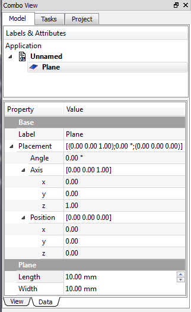

|
| Umístění Menu |
|---|
| Díl → Vytváření zákl.geom.prvků → Plane |
| Pracovní stoly |
| Díl, OpenSCAD |
| Výchozí zástupce |
| Nikdo |
| Viz také |
| Vytváření zákl.geom.prvků |
Description
Create a simple parametric plane 10 x 10 mm, with the parameters of position, length, and width. By default, the plane is positioned at the origin (0,0,0).
{kind=link}
How to use
The standard plane is created with its lower left corner at the origin point 0,0,0. To change these parameters, open the Location section and enter the desired values in the respective input fields, or click on the 3D view and select a point, the point coordinates are taken from the fields. In the Direction menu you can also define a standard vector (X, Y or Z) normal to the plane, or click User Defined ... to open the dialog box that allows you to set a different carrier (eg direction 1.0 , -1 creates a plane inclined 45 ° with respect to X and Z).
Vlastnosti mohou být změněny později v menu Složený pohled → Data, po výběru položky.
Option
|  |
ViewYou have the standard properties view. DataBase - Object placement data
Plane - Plane Specific Parameters
|
{kind=link}